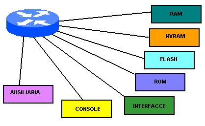
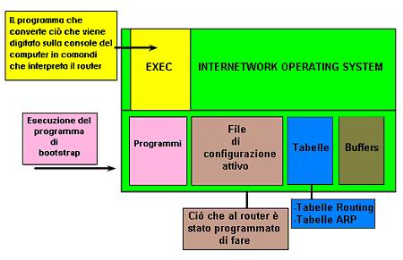

I componenti di un router giocano un ruolo chiave nel processo di configurazione. Sapere quali componenti sono coinvolti nel processo di configurazione permette di capire come il router immagazzina ed utilizza i comandi eseguiti dall’utente.
L’archittetura interna di un router Cisco è composta da componenti importante e sono:

RAM : nella RAM si trova la configurazione "corrente" del router e le varie variabili temporanee necessarie al router per il suo funzionamento: tabelle di routing, arp cache e il buffer riempito dai pacchetti in coda. Il contenuto della RAM viene perso in fase di spegnimento o riavvio del router (memoria di tipo "volatile") .
NVRAM (non volatile RAM): preserva la configurazione utile allo startup e al backup. Contiene il registro di configurazione. Non viene persa in caso di spegnimento del router;
FLASH: è la memoria di tipo "permanente", nella quale si trova il sistema operativo (Internetwork Operating System - IOS). Nella memoria Flash possono essere salvate diverse versioni dell'IOS;
ROM: è la memoria nella quale si trova il software di diagnostica e il software di base del router (fondamentalmente quello necessario al boot dell'apparato); l’aggiornamento software nella ROM richiede la rimozione e sostituzione dei chip sulla CPU.
INTERFACCE: sono le connessioni di rete sulla scheda madre del router o su moduli di interfaccia separati, attraverso il quale i pacchetti entrano ed escono dal router, e possono essere di diversi tipi, quali:
CONSOLE: si tratta di un interfaccia seriale (asincrona) usata per il collegamento ad un terminale seriale.
AUSILIARIA: si tratta di una porta seriale asincrona RS232 usata per il collegamento di altre periferiche (modem, cavo seriale null modem). E' utilizzata spesso per la configurazione remota.
Il componente che sovreintende al funzionamento di tutto l'apparato è il:
Microprocessore: la sua potenza varia a seconda della versione del router e della classe a cui l'apparato appartiene. Diversi router Cisco montano più di una CPU. I compiti svolti dal microprocessore sono fondamentalmente i seguenti:
In aggiunta ai componenti del router possiamo trovare delle Schede di espansione che si inseriscono in appositi alloggiamenti (slot) e ospitano vari tipi di interfacce fisiche (Ethernet, modem ecc.), nonchè eventuali moduli avanzati.
Performance dell'apparato
La potenza di un router (intesa come numero di pacchetti al secondo inoltrati) è variabile a seconda di alcune scelte architetturali del router stesso:
Il segreto del successo dei router Cisco è, comunque, legato al sistema di gestione. La potenza, da tutti riconosciuta, del sistema operativo (Internetwork Operating System - IOS) è garanzia di funzionalità e prestazioni ecellenti. Questo sistema (che risiede nella memoria Flash) permette, attraverso appositi comandi, di configurare l'apparato secondo le necessità dell'utente. L'IOS non è semplice ed intuitivo, ma molto potente.
Il lavoro della Ram nel Router
Quando viene acceso il router, la ROM esegue un programma di avvio (bootstrap). Questo programma avvia alcuni test e successivamente carica il software Cisco IOS nella memoria. Il componente EXEC (command executive) che fa parte dell’ IOS riceve ed esegue i comandi che vengono immessi dall’utente.
Un router utilizza la RAM per caricare il file di configurazione del router, file che contiene processi e informazioni sulle interfacce che direttamente influiscono sul funzionamento del router; nella RAM sono caricate anche le tabelle di rete mappate e l’elenco degli indirizzi del routing.

Una
versione salvata di questo file di configurazione è immagazzinato nella
NVRAM in modo permanente e viene caricato
nella memoria principale RAM ogni volta
che il router viene acceso.
L’immagine del sistema operativo IOS
non può essere visualizzata sul terminale. L’immagine viene eseguita
dalla memoria RAM e caricata da uno delle
diverse origini di input.
Il sistema operativo è strutturato in modo da eseguire delle operazioni
che gestiscono dei task associati con differenti protocolli, come lo spostamento
dei dati, la gestione delle tabelle e dei buffer, gli aggiornamenti degli instradamenti
e l’esecuzione dei comandi utente.